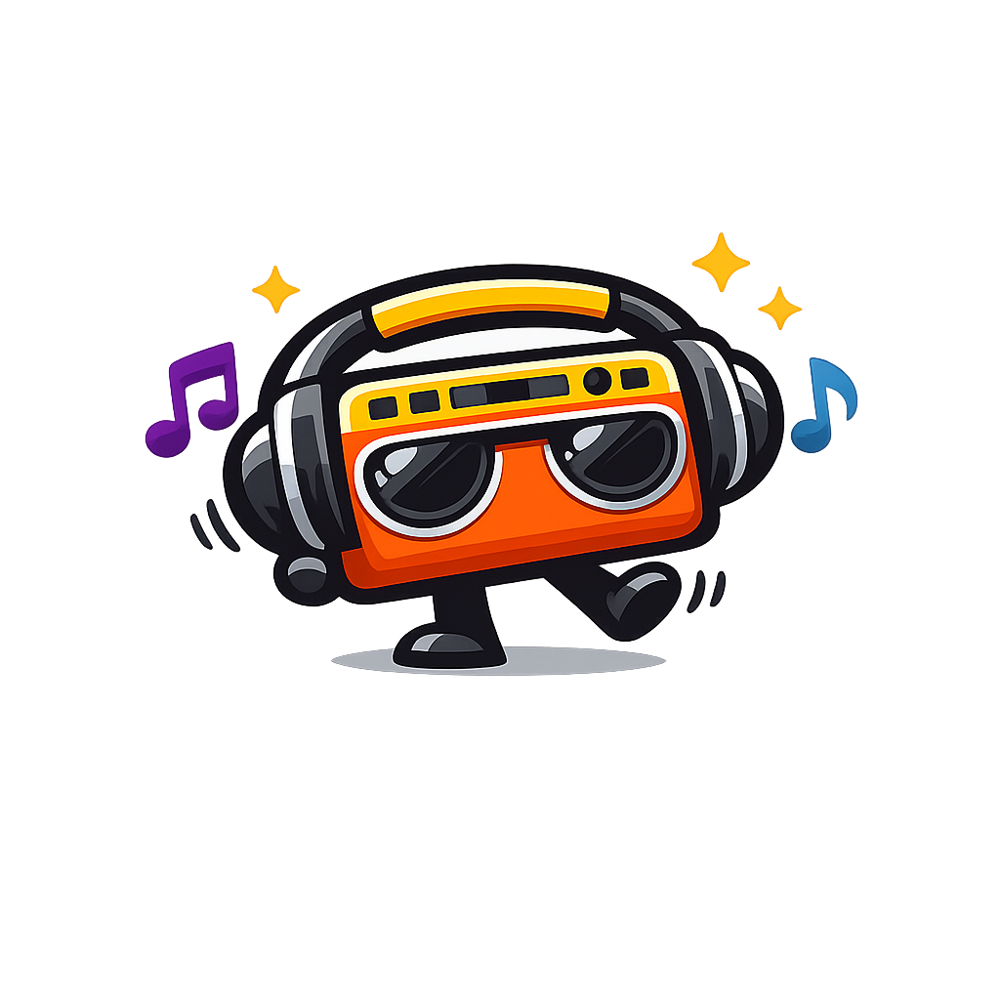
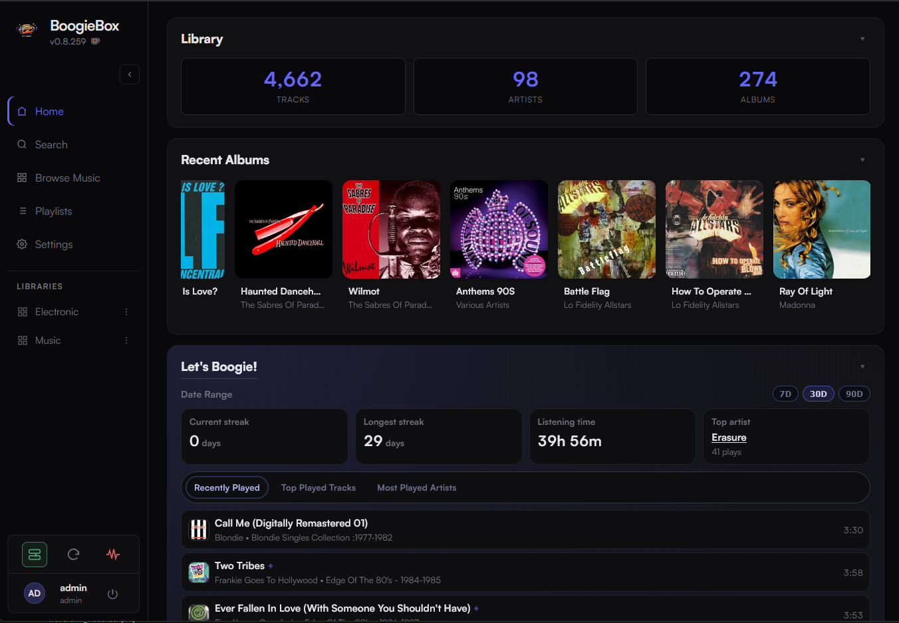

Rediscover
Explore artists, albums, listening history, ratings, and the Genre Galaxy without giving up control of your files.

BoogieBox GitHub
Your collection has stories left to tell. Browse it, shape it, sing with it, and let the AI-powered BoogieMix DJ turn it into something new.
Windows & Linux · Self-hosted · No subscription
Built for owned music
BoogieBox brings fast browsing, personal ratings, artwork, lyrics, mobile playback, and rich discovery tools to local and network music libraries.
Explore artists, albums, listening history, ratings, and the Genre Galaxy without giving up control of your files.
Multi-user profiles, themes, parametric EQ, playlists, karaoke lyrics, and an expressive Vinyl Mode.
Run it on Windows or Linux, stream across your local network, and enrich your library with optional metadata providers.
AI-powered mixing
Go beyond shuffle. BoogieMix uses AI-assisted planning and local music analysis to choose track order, plan transitions, and render continuous listening sessions from the playlists you already love.
New — playback bar
The playback bar now shows a live waveform visualizer, giving you an at-a-glance view of the track's energy as it plays.
New — stem analysis
Every deeply analyzed track gets a Sonic Fingerprint — a live stem breakdown visible right in the player. See what's happening at the instrument level and understand exactly where BoogieMix will place its transitions.
Inside BoogieBox
From a desktop collection to a phone in your hand, the same library stays close.
The useful details
MP3, FLAC, M4A, OGG, OPUS, WAV, AAC, WMA, AIFF, and APE.
Waveforms, BPM detection, Sonic Fingerprint stem analysis, listening history, and optional BoogieMix deep analysis with Demucs.
Last.fm, lyrics, metadata enrichment, mobile access, and optional DLNA/UPnP.
Rust, React, TypeScript, Tauri 2, SQLite, and FFmpeg.
Your music is already waiting